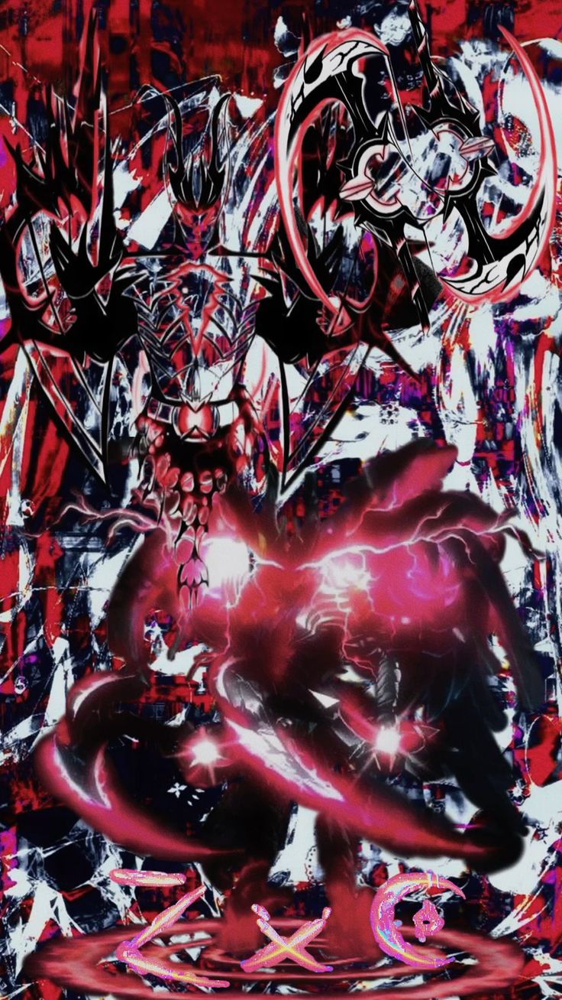
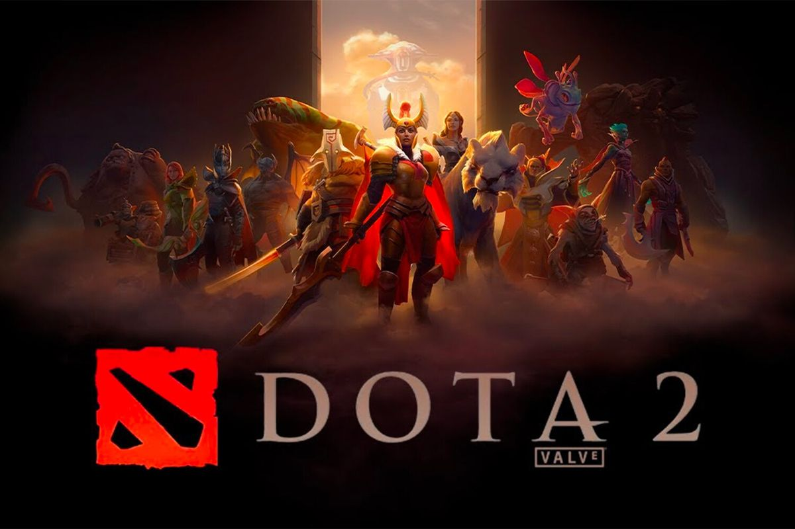
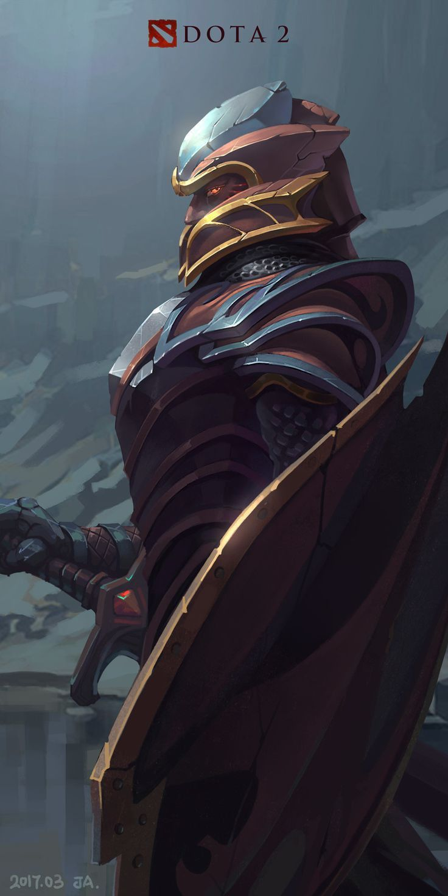
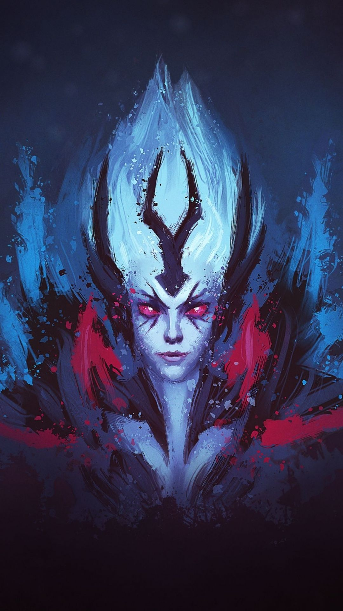
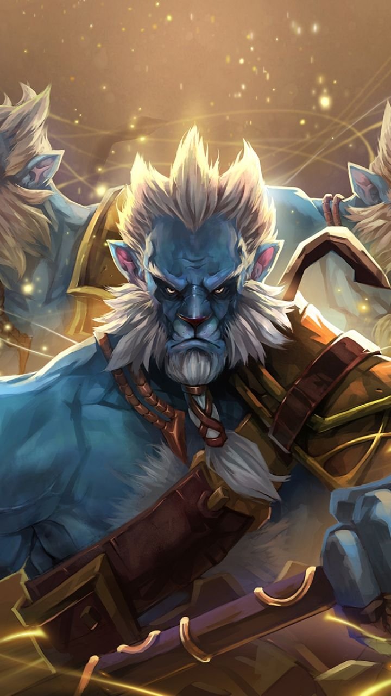
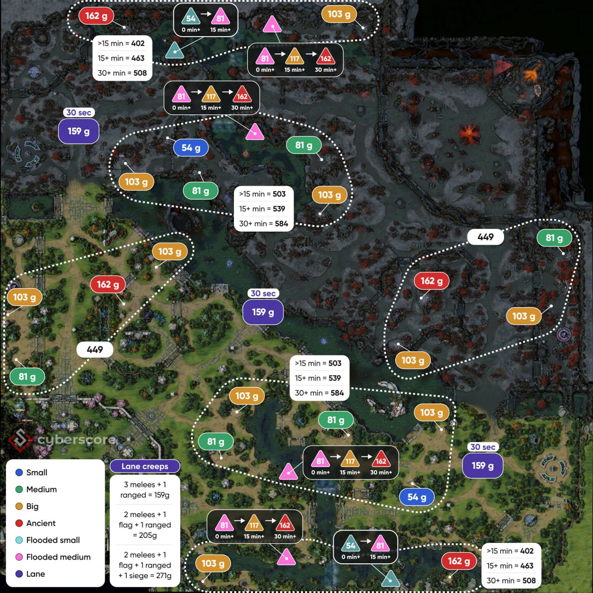
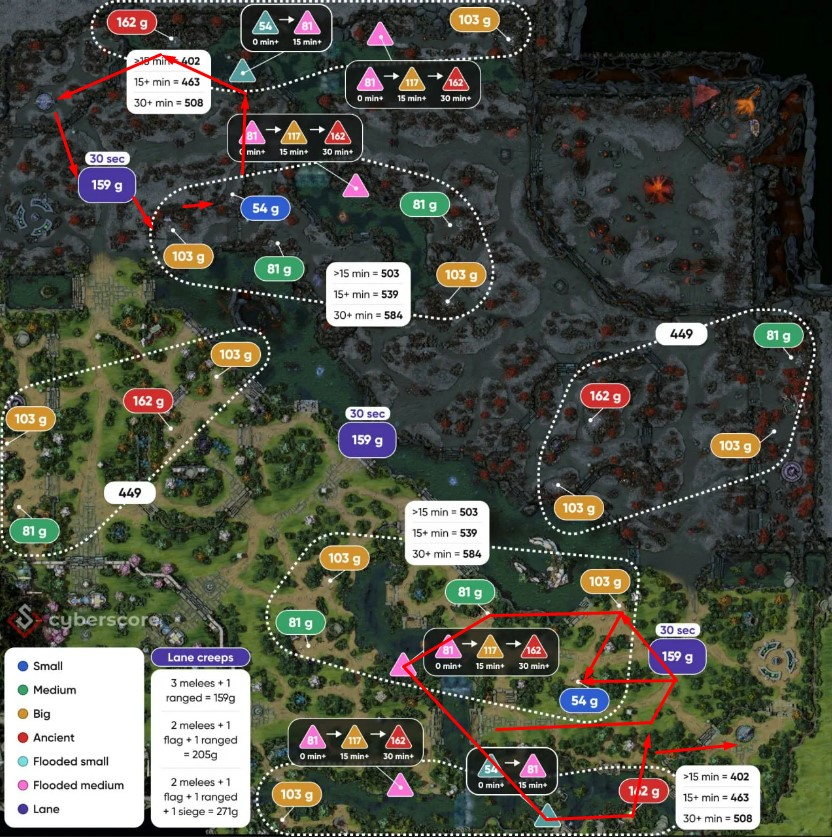
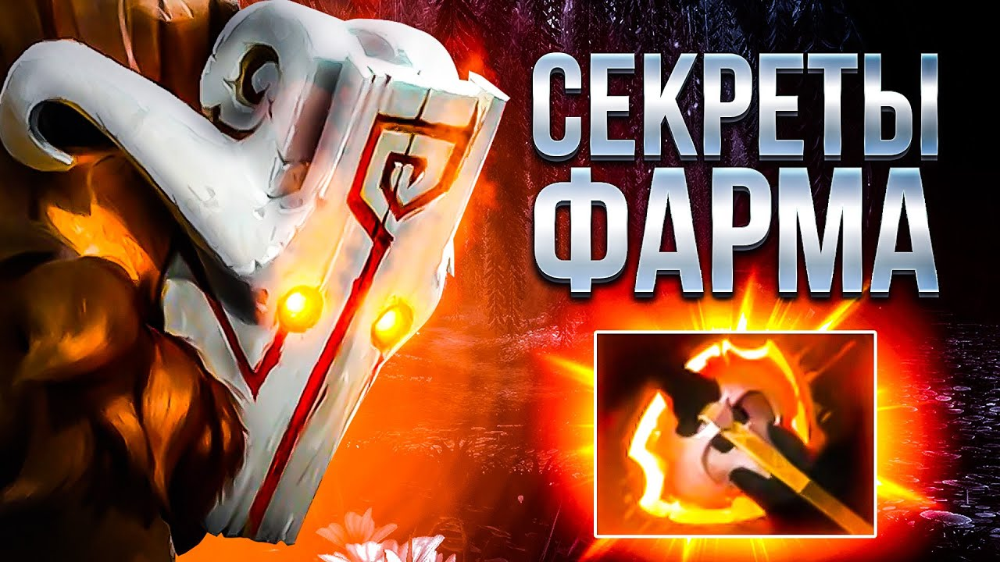

Что такое Dota 2?
Dota 2 — это командная онлайн-игра жанра MOBA, где две команды по пять игроков сражаются на симметричной карте, стремясь уничтожить главное здание противника, называемое Ancient. Суть игры заключается не просто в сражениях, а в сочетании стратегии, координации и постепенного усиления своего героя по ходу матча. Каждый игрок выбирает уникального героя с особыми способностями, и в начале все находятся в относительно равных условиях, но затем через убийства врагов, уничтожение крипов и разрушение башен получают золото и опыт, которые позволяют становиться сильнее.
Игра делится на этапы: сначала идёт линия, где важно правильно добивать крипов, мешать сопернику и не умирать, затем начинается более активное перемещение по карте, командные драки и борьба за контроль ключевых зон, а в конце решают крупные сражения и ошибки одной из сторон. Чтобы победить, нужно не только накапливать преимущество, но и грамотно его реализовывать: уничтожать внешние башни, захватывать территорию, контролировать ресурсы вроде Рошана и в нужный момент собраться всей командой для решающего наступления.
В конечном итоге победа достигается тогда, когда команда последовательно разрушает оборону противника, выигрывает ключевые сражения и добирается до его базы, чтобы уничтожить Ancient. Огромную роль играет коммуникация между игроками, потому что скоординированные действия почти всегда сильнее разрозненных попыток. Также необходимо следить за расстановкой обзора на карте, чтобы не попадать в засады и контролировать перемещения врага. В поздней стадии игры даже один выигранный бой может решить исход матча.




Что такое фарм?
Фарм в Dota 2 — это процесс получения золота и опыта, который является основой развития героя на протяжении всей игры. Под фармом чаще всего понимают добивание крипов на линиях и в лесу, потому что именно последний удар по юниту даёт максимальное количество золота, и умение стабильно делать такие удары считается одним из ключевых навыков игрока.
Фарм делится на несколько типов: безопасный фарм на линии, фарм в лесу, быстрый фарм с помощью способностей и фарм за счёт убийств героев. На ранней стадии игры игроки чаще всего фармят на линиях, стараясь контролировать баланс крипов так, чтобы линия находилась в удобной позиции.
С течением игры фарм становится более сложным и стратегическим процессом, потому что ресурсы на карте ограничены и за них конкурируют все игроки команды. Хороший фарм включает в себя постоянное перемещение между лагерями крипов, чтобы не терять ни секунды. Это часто называют эффективностью фарма или «GPM» — количеством золота в минуту.
Существуют специальные предметы и способности, которые ускоряют фарм. Некоторые герои изначально лучше подходят для быстрого фарма, потому что у них есть способности с уроном по области. Такие герои обычно играют роль «керри».
Однако фарм — это не только про количество золота, но и про правильные решения: иногда лучше прекратить фармить и помочь команде в драке, если это приведёт к более важному преимуществу.
Также существует понятие «опасного фарма», когда игрок заходит на территорию противника, чтобы получить больше ресурсов. Это требует хорошего понимания карты, наличия обзора и чувства момента.
В конечном итоге фарм — это фундамент всей экономики игры, и тот, кто лучше управляет этим ресурсом, чаще получает преимущество и больше шансов на победу.

Что такое фарм паттерны?
Фарм паттерны — это оптимальные маршруты передвижения по карте для максимально эффективного сбора золота. Они включают в себя последовательную очистку лагерей нейтралов и линий крипов.
Правильный фарм паттерн позволяет керри:
- Собирать максимум золота в минуту
- Быть в безопасности от вражеских ганков
- Быстро перемещаться между точками фарма
- Контролировать важные участки карты
Один из лучших видов фарм паттернов
Рассмотрим один из фарм паттернов на 1-ой картинке снизу. Лично я сам пользуюсь таким фарм паттерном. Конечно, он может меняться в зависимости от ситуации на карте, но если все враги находятся в абсолютно других точках карты, то лучше всего, по моему мнению, пользоваться им, так как используя его мы одновременно толкаем две линии, тем самым оказывая сильное давление на вражескую команду, не отставая, а даже обгоняя по фарму вражеских героев.

Как правильно фармить и играть на керри
Подробное описание передвижения
Если рассказать подробно про передвижения в этом фарм паттерне, то сначала мы толкаем линию, после чего идем фармить два ближайших кемпа. После этого мы идем фармить два нижних кемпа на речке, после чего снова выходим на линию, толкаем ее, и бежим в гейт и телепортируемся в него.
Оказавшись на верхней вражеской линии мы сразу же идем толкать линию, после чего так же фармим 2 ближайших кемпа к линии, 2 кемпа на речке и обратно в гейт, и мы повторяем это действие пока враги не начнут реагировать и стягиваться на нас. Такой подход позволяет постоянно оказывать давление на обе линии.

Как правильно передвигаться и думать в доте
Действия на вражеской территории
Игра на вражеской половине карты — это один из самых важных навыков. Когда вы правильно действуете на территории противника, вы не только получаете дополнительное золото и опыт, но и создаёте колоссальное давление на вражескую команду.
Типы действий на вражеской территории
Агрессивный фарм треугольника. Выходить на вражескую сторону ради фарма можно только при соблюдении нескольких условий. Во-первых, ваш герой должен быть сильнее вражеского минимум на два предмета. Во-вторых, у вашего героя должен быть надёжный способ спасения. В-третьих, у вас обязательно должен быть вард на подходах и готовый свиток телепортации.
Толкание линий (сплитпуш)
Это техника, которую регулярно используют профессиональные игроки. Вы не стремитесь убить героев — ваша цель уничтожить башни и создать давление на карте. Правильная техника сплитпуша: вы толкаете линию до вражеской башни, затем сразу уходите в лес противника. Вражеская команда вынуждена отправлять героев защищать башню, но к тому моменту вы уже покинули эту зону.

Создание давления на вражеские линии
Лучшие керри герои и правила фарм паттернов
Рекомендуемые герои для начинающих керри: Sven, Luna, Alchemist, Terrorblade, Templar Assasin
Основные правила фарм паттернов:
- Первые 5-10 минут — фокусируйтесь на линии, добивайте всех крипов
- После получения базовых предметов — начинайте фармить нейтральные лагеря между волнами крипов
- Используйте способности для ускорения фарма
- Всегда имейте Teleport Scroll для реакции на драки или смены линии
- Не стойте без дела — каждая секунда должна приносить золото или опыт
Совет: Смотрите мини-карту и избегайте опасных зон. Если враги исчезли — отходите в безопасное место для фарма.

Sven
Свен — один из лучших керри для быстрого фарма благодаря способности «Great Cleave». Этот скилл позволяет ему наносить урон по площади и мгновенно очищать лагеря нейтралов. Активировав ульт «God's Strenght», Свен получает колоссальную прибавку к урону, что позволяет убивать крипов с одного-двух ударов.

Luna
Луна — фармит молниеносно благодаря пассивной ауре «Lunar Blessing», которая увеличивает урон, и способности «Moon Glaives» с отскоками. Луна может одновременно фармить линию и нейтральных крипов с невероятной скоростью.

Terrorblade
Террорблейд — король быстрого фарма благодаря илюзиям. Его способность «Conjure Image» создаёт копии героя, которые могут самостоятельно фармить лагеря. Со скиллом «Metamorphosis» он превращается в мощного дальнобойного стрелка.

Templar Assassin
Темпларка — мастер контроля над линией и лесом. Её способность «Psi-Blades» пробивает врагов насквозь, нанося урон всем крипам в линии. Благодаря щиту «Refraction» она может фармить даже в опасных зонах.